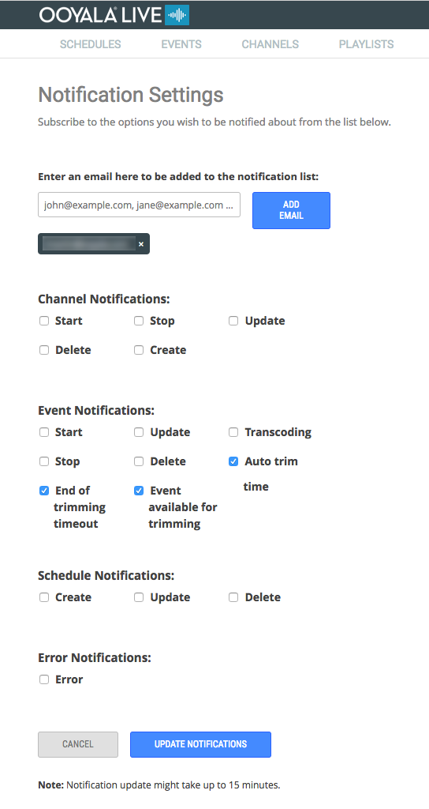

Read the most up-to-date information about Ooyala Live features.
Live Event Switching Inputs (2019-05-15)
You can specify multiple inputs for a live stream, including RTMP, a slate, or a Playlist of VOD assets.
You can now schedule switch-overs from one input to another in Advanced Options for event creation.
A typical use case would be:
- You are going to broadcast a sporting event, and want to show recorded pre- and post-event shows before and after.
- Schedule the playlist containing the pre-event show(s)
- Schedule a switch to RTMP when the event begins.
- Schedule a switch to playlist containing the post-event shows when the event is finished
Limitations
- Switching is not supported for Channels participating in HA.
Ingest Profile Selection for Upload VOD Assets (2019-05-15)
You can now select the ingest profile you want to use when you upload videos in Backlot:

To change the names of the ingest profiles for you account, add a new profile, or change the account default profile, contact Support.
Limitations
- Ingest profile selection is not supported for VR 360 content.
Ooyala Live v4.5.0 Release (2018-11-01)
- OoyalaLIVE now supports HD Token Authorization on Akamai CDN to protect your content from Link Sharing and Player Hijacking. Stream Tokens authenticate access rights for the user entitlements to help confirm that only authorized users get access to your video stream,.
- As of this version, support for Adobe Access DRM will be deprecated. Support for all our other DRM models remains the same.
Ooyala Live v4.4.0 Release (2018-09-24)
- Ooyala Live’s Linear VOD Playlist makes it possible to jump from Live streaming into a VOD playlist and back to Live streaming. Now, when you create a channel, you can add network input (live feed), a backup slate of your choice, and additionally, a playlist that you have created already.
- Updates to Facebook syndication to use new Facebook permission types and UI guidelines .
Ooyala Live v4.3.0 Release (2018-08-30)
This Ooyala release introduces the following fixes and improvements:
- Added support for CEA-608 multi language in-stream closed captions to cover markets that currently do not support CEA-708.
- Various performance improvements.
Ooyala Live v4.2.0 Release (2018-08-20)
This Ooyala release introduces the following fixes and improvements:
- Added the capability to switch priorities of sub-channels from the UI while using HA channels.
- Improved resiliency on HA events due to changes made to the behavior that puts HA events in error states.
- Improved issue resolution options for Live Operations teams to detect and recover from potential errors to HA events.
Ooyala Live v4.1.1 Release (2018-08-09)
This Ooyala release introduces updates to reduce eHLS token expiration time by 15 seconds. The tokens now expire in 9 minutes and 45 seconds.
Ooyala Live v4.1.0 Release (2018-07-30)
This Ooyala release introduces the following fixes and improvements:
- Enhancements to HA workflows.
- Resolved issue where a request to stop Azure Channel would fail due to a workflow problem when recreating the program in Azure.
- UX update to show the correct number of Playlist items when displaying selected assets.
- Resolved issue where we were displaying backend information in the UI. This will not be displayed in the future.
Ooyala Live v4.0.0 Release (2018-07-16)
This Ooyala Live release introduces:
- Support for Clipping Live channels to Ooyala Media Asset Manager, powered by Flex Platform.
- DVR window support has been increased from 24 hours to 80 hours.
- This release also fixes the bug for High Availability (HA) channels where starting a HA channel did not start both sub channels.
- This release also includes updates for Multi-Audio Channels like Live to VOD support with only default language.
- API docs available at https://live.ooyala.com/docs/api for Channels and Events.
- Improved support for Youtube:
- YouTube stream with the following configurations @30fps:
- 1080p
- 720p
- 480p
- 360p
- 240p
- Source resolutions
- Up to 1080p
- YouTube stream with the following configurations @30fps:
Ooyala Live v3.9.0 Release (2018-05-02)
This Ooyala Live release introduces support for Multi-Audio streams for Live channels. Multi-Audio streams allow you to provide multi-language support for live video streaming. You need to contact Ooyala to update your profile for Multi-Audio support. The Multi-Audio feature will display languages based on the ISO 639 standard language codes.
- Archiving multi-audio streams is currently not supported.
This release also includes stability and performance enhancements for High Availability (HA) channels.
Ooyala Live v3.8.0 Release (2018-04-05)
- Clipping is not supported for VR360 streams.
- DRM is not supported for VR360 streams.
- Your Backlot account must be VR360 enabled to properly transcode VR360 streams and create VOD assets.
- High Availability with VR360 requires special player configuration. Contact Ooyala if you want to implement VR360 on a HA channel.
Ooyala Live v3.7.2 Release (2018-03-16)
This Ooyala Live patch release fixes an infrastructure backward compatibility issue with some user profiles. Impacted customers have been notified, and a patch has been implemented. No further customer action is required. No new features are introduced in this release.
Documentation Releases
This release includes documentation updates, see Channel Maintenance Considerations.
Ooyala Live v3.7.1 Release (2018-03-13)
Ooyala Live v3.7.0 Release (2018-02-23)
This Ooyala Live release updates HA Event scheduling, event auto trimming scheduling, and how Ooyala Live creates VOD assets. It also includes bug fixes.
Fixes and Enhancements- Add time before auto trimming starts: You can now add more time before auto trimming starts for scheduled events. The default time before the auto trimming feature trims and archives a scheduled event is 1 hour. You can now add up to 11 hours before scheduled events are automatically trimmed. The amount of time you can add is constrained by the duration of the scheduled event. See, Archive and Trim Event.
- Improved notifications: You can now turn on notifications to get
emails to remind you when you have automatic trimming enabled for an
event.

- Transcoding continues when channel is stopped: You can now stop a channel with VOD assets that are uploading or transcoding without impacting the asset. Previously your channel had to be running until the VOD asset processing was complete. Now we allow you to stop your channel as soon the VOD asset has started to be processed.
- Scheduled HA events are preserved when swapping sub-channels: You can now swap out sub-channels and still preserve future scheduled events. See, Swap High Availability (HA) Channels
- Incompatible or invalid profile: If you change any profile of an existing channel, your channel might go to an error state if the updated profile is invalid or incompatible with other channel profiles. If your channel goes to error state and you are unable to stop the channel, you should contact Ooyala support for assistance.
- Renaming events more than one time: If you rename a HA live event more than one time while it is running, the names of the sub-events on the sub-channels will be different from the final name of VOD asset. The VOD asset will have the correct name of the last edit to the HA event name.
- Stopping and starting HA channels with events in the future may cause event errors: If you have future events schedule on HA channels that are stopped and restarted, your HA events may go to an error state if you hot swap the sub channels and start the events earlier than the scheduled time.
- Warning about losing events when deleting a channel not shown: You can stop a channel once all events are in a pending or transcoding state; however, if you try to delete a channel that has pending or transcoding events, you will not get any warning and your events will be lost.
Ooyala Live v3.6.2 Patch Release (2018-01-17)
This Ooyala Live patch release updates HA Event URL formatting. No new features are introduced in this release.
Ooyala Live v3.6.1 Release (2018-01-11)
This Ooyala Live patch release updates Ooyala Live API required fields and backend deployment changes. No new features are introduced in this release.
You can read the API Docs Release Notes here.
Ooyala Live v3.6.0 Release (2018-01-04)
Fixes and EnhancementsSet event persistence for non-archived events.
You can now specify how long non-archived events remain available for playback, see Add an Event in the Ooyala Live User Guide.
Ooyala Live v3.5.0 Release Update (2017-12-22)
Fixes and EnhancementsDigital Rights Management (DRM) supported for HA channels.
For more details about Ooyala Live HA channels, read Setting Up a High Availability Channel.
Ooyala Live v3.5.1 Patch Release (2017-12-11)
This Ooyala Live patch release updates billing related to event trim times. No new features are introduced in this release.Ooyala Live v3.5.0 (2017-12-04)
Fixes and Enhancements-
We are in the process of updating the Ooyala Live REST API documentation. While we are making the updates, you'll have a couple of options for accessing our API documentation.
- The latest Live API documentation can be accessed here Ooyala Live REST API.
The latest Ooyala Live REST API documentation includes recently exposed API endpoints. You can browse the descriptions of new endpoints and even "Try it out." We will migrate existing Live API endpoint documentation to this new format overtime.
- Existing API documentation can be accessed here Ooyala Live REST API
Reference.
The existing Ooyala Live REST API Reference will be available until we have completed all of the content migration to our new Live API documentation format. There are no plans to add any new API endpoints to this documentation.
- The latest Live API documentation can be accessed here Ooyala Live REST API.
- When trimming events on channels that use Azure, the trimming controls trim 10 second increments of the video.
- If an event name change is made while an event is running, the archive asset name in Ooyala Backlot might not be updated with the latest event name.
- We have notice infrequent intermittent issue when High Availability events don’t start at the scheduled time.
Ooyala Live v3.4.1 (2017-11-08)
Fixes and EnhancementsThis release includes a backend update to return additional channel IDs in an API request. There are no new features in this release.
Ooyala Live v3.4.0 (2017-11-06)
Fixes and Enhancements- Corrected issue with channel clipping that potentially could cause some channels to stick in the stopping state for some customers.
- The DVR window now has a 60 second minimum duration.
- Corrected retry logic for Live to VOD transcoding for some customers.
- Resolved issue about a channel failing to start immediately after being stopped.
Ooyala Live v3.3.2 (2017-11-01)
This is a patch release only. No new features were introduced in this release. Minor updates were made to support backend utility API.
Ooyala Live v3.3.1 (2017-10-11)
Improved Security for Encrypted HLS (eHLS) Live StreamsWe made improvements to ensure timely encryption of live streams over eHLS.
Ooyala Live v3.3.0 (2017-10-04)
Fixes and Enhancements- Trim and Archive High Availability (HA) Events: Trimming and archiving events on an HA channel is supported. Schedule an event on an HA channel to ensure that your event is captured as a VOD asset. See, Add Event to High Availability (HA) Channel.
- DVR Window Syncs with Trimmed Event: The DVR window size of a trimmed event is now re-sized to match the size of the final event. This synchronizes the size of the event with the DVR window of the event, providing a seamless broadcast transition from the event to the archived asset.
- Playlists Successfully Created but Not Visible: Corrected issue related to playlist being created, but not being visible in the Ooyala Live UI. Playlists are now created and properly displayed in the UI.
Ooyala Live v3.2.1 (2017-08-24)
Fixes and Enhancements- Add Channel with Custom Packaging Partner: Corrected issue that didn't allow users to add channels with Custom selected for Packaging Partner.
Ooyala Live v3.2.0 (2017-08-15)
New Feature- Auto-start Ad-hoc Channels With Scheduled Events: Ooyala Live now tries
to start ad-hoc channels in a Stopped state 30 minutes
prior to a scheduled event. This applies only to ad-hoc channels in the stopped
state. Events must be scheduled at least 40 minutes prior to the event start
time.Note: If Ooyala is unable to start the channel, a notification is sent to you and the Brightcove Technical Support team.
Ooyala Live v3.1.0 (2017-08-04)
New Feature- High Availability (HA) Channels: You can now create High Availability
channels, and events on those channels, from the Ooyala Live User Interface. An
HA channel provides reliability and failover protection. You can hot swap
running channels into your existing HA channel to manage all your critical
content needs.Important:
The following features are not available in the initial release of HA Channels.
- DRM Channels are not supported as sub-channels. This means you can't use a DRM channel as a sub-channel for HA channels.
- Archiving is not supported. Currently Live Events cannot be archived to Ooyala Backlot.
- On Premises Encoder Improvements: On-premise conductors that control the ground encoders now work with SDI.
- HTTPS Stream Conflicts and Mixed Content: HTTPS streams can now be selected unrestricted from underlying mixed content issues.
- Azure Maximum Limit: Fixed issue with the Azure Maximum Limit not being returned correctly.
- URL Reuse on Elemental: Fixed conflict with reusing endpoints associated with older (cached) content.
Ooyala Live v3.0.0 (2017-06-29)
- An issue that inadvertently allowed events to be created in the past was identified and corrected. Now it is not possible to create an event in the past.
- Ooyala Live added back-end infrastructure supporting high availability (HA) channels.
- DVR Duration Override is no longer supported for Events.
Ooyala Live v2.9.0 (2017-06-12)
- Ooyala Live support for on premises Ooyala Ground Encoder and Ground Repackaging are available in Ooyala Live release v2.9.0. There were also other internal enhancements and bug fixes in this release.
- Improved accuracy of clipping and trimming.
Ooyala Live v2.8.2 (2017-05-25)
Ooyala Live now supports live video syndication to YouTube.
Live Video Syndication to YouTube
Ooyala Live v2.8.1 (2017-05-10)
- Live UI enhancements for social media syndication.
- Added support for Delta S3 Event to overcome NAS stability issues.
Ooyala Live v2.8.0 (2017-03-29)
Ooyala Live now supports live syndication to Facebook, Twitter's Periscope app, and the Twitch app.Live Video Syndication to Social Media
-
Facebook
Ooyala Live has simplified streaming live video on Facebook. Without stopping the channel, users can update the title and description, log in to different Facebook accounts, and change the Facebook page being used for syndication.
Important: Be sure to log out of all Facebook accounts on the browser you are using for Ooyala Live before starting syndication. You can get stuck in an authentication error loop.For details on how to stream live video from Ooyala Live to Facebook, see Syndicate Live Video to Facebook.
-
Periscope/Twitter
Ooyala Live now supports syndication of live video to Twitter's Priscope App. For details on how to stream live video from Ooyala Live to Periscope, see, Syndicate Live Video to Periscope.
-
Twitch
Ooyala Live now supports syndication to the Twitch live streaming video platform. For details on how to stream live video from Ooyala Live to Periscope, see Syndicate Live Video to Twitch.
Known Issues
Running Multiple Facebook Accounts and Syndication
When accessing multiple Facebook accounts from the same browser used for Ooyala Live, you can get an error condition that won't allow you to start syndicating to Facebook.
-
Error Condition:
- Facebook syndication has been configured on a channel for a specific Facebook account.
- Syndication to Facebook is stopped.
- You log in to a different Facebook account on the same bower that Ooyala Live is running.
- You try to start syndication to Facebook.
- A flashing error message is displayed.
-
Corrective Action:
- Log out of any Facebook session on the browser that is running Ooyala Live.
- Refresh your browser.
- Start Facebook syndication.
Ooyala Live v2.7.0 (2017-02-09)
New Features and Enhancements
In addition to many infrastructural improvements to performance and stability, this release provides the following added feature:
- Easy Encoding Location Migration Previously, in order to change the encoder region of a channel, you had to create a new channel. With this release, you can contact your Brightcove Technical Support and quickly change the encoder region of a channel to another one of the same type. This means that if you are having connection issues to the encoder region, Brightcove Technical Support can simply stop the channel and move it to a different encoder region. If you have lost access to a Tokyo encoder region, you can quickly change the channel to use a Seoul encoder region instead. Contact your Ooyala account manager help setting up this new capability.
Ooyala Live v2.6.0 (2017-01-12)
New Features and Enhancements
Segment snapping when trimming Live to VODFor customers editing live streaming content for VOD, previously, when a Live to VOD video was trimmed, the UI let them set trim values to the second. This gave the impression that the VOD platform would accept trim values to that accuracy, which it does not. Now, trimming snaps to the segment boundaries of the associated Live channel's encoding profile. This new feature is automatically applied when you trim video content.
To modify a channel's encoding profile (often 6 or 10 seconds), contact Ooyala Support.
Notifications Improvement
For monitoring their channels for alerts on channels with Ooyala Encode and Ooyala Package, Ooyala Live has a new channel status called 'alerting'. This status is activated when there are any alert conditions. This new feature is automatically applied. You do not need to modify a channel's profile.

Alerts are captured from Encoder and Packager and displayed in the notifications area. When the alert is resolved (automatically or by human intervention) the channel returns to 'running' state.
Typical alert conditions could include:
- Problems with Encoder input or output
- Problems with Packager input or output
This feature facilitates improved debugging. Further debugging information has also been added to email notifications. In case of an issue, provide the debugging information in the email to Ooyala Support.
Known Issues
- When filtering events by On-Air state or Off-Air state, the results returned might not be accurate.
- On the Events page, when you select a different date range, pagination for the events does not work.
- For a trimmed asset, the event start and stopped times do not match the event duration while the event is in Stopping, Off-Air state. Duration will be correct when the event reaches Stopped, Off-Air state.
Ooyala Live Release - Version 2.5.1
New Features and Enhancements
- A hot fix has been added to ensures that slates are available on new deployments after a customer initiates a credential swap.
Ooyala Live Release - Version 2.5.0
New Features and Enhancements
- The UI has been modified to improve the user experience for setting the start and endpoints for clipping.
- When there are more than 20 search results for videos and you scroll to the bottom of the current results, the window displays additional results. The preview image of the first video in the list becomes the preview image for the playlist. The videos appear on the Playlist Details page.
-
Prefetching ads is now enabled for all users
As with any platform, Ooyala Pulse maintains a specific capacity at any given time. Once the max limit of ad requests per second is reached, ads might not be returned during ad breaks to viewers.
Prefetching makes those requests in advance helping to prevent your ads from bottle-necking during high-capacity periods. Ooyala Live holds those requests for a rolling 20 minutes, and then schedules a new pre-fetch.
Important:
There is no extra charge for prefetching.
Prefetching is only available in Personalized Ad mode. A channel that does not use personalized ads cannot be changed to a personalized ad channel.
For channels using Personalized ads that you have already created, you need to turn prefetching ON to use prefetching.
To turn on prefetching:
- Change the state of the channel to “Stopped”.
- In the channel details, select Personalized Ads.
- Change the value for Ad Prefetch Mode to Auto or On.
The following are the options available for Prefetching:
- AUTO (recommended)- Ooyala Live begins prefetching for your channel only manages the number of prefetch requests to prevent them from exceeding the ad providers' request limits. This is important if you have a large number of consumers on your steaming channel.
- ON - Your channel will always prefetch every 20 minutes whether or not is a high capacity period.
- OFF - Ooyala never performs prefetching. During high capacity periods, your consumers might not see your ads.
- The ooyala.log is no longer employed. It is replaced with the Ooyala Ingestion Log REST API (https://api.ooyala.com/v2/ingestion) that lets users search for log information based on various criteria. Currently, this API gives users the ability to filter ingestion log information by time period (basic and manifest-based users) or status (manifest-based user only). In the future, the API can be expanded to allow additional filtering options.
Ooyala Live Release - Version 2.4.1
New Features and Enhancements
- A hot fix has been added to support legacy URLs if assets were created before Ooyala V4 Player integration.
Ooyala Live Release - Version 2.4.0
New Features and Enhancements
- Real-time live clipping has been added to Ooyala Live. Clipping allows the customer to create frame-accurate clips. See Add Clips from a Live Stream for more information.
- Under the Playlist tab, the Add videos to playlist search feature can now return more than 100 results. Scrolling to the bottom of the search results loads the next set of results.
- Under Channel Details, the Clipping tab provides a slider to set the beginning and end of a clip. It also displays a list of the past three days of clips, including the clip's current status.
Ooyala Live Release - Version 2.3.0
New Features and Enhancements
- You can now stream prerecorded videos from Ooyala Backlot. To do this, you create a playlist of videos in Ooyala Live, add videos to the playlist, associate the playlist with a channel, and run the channel. For more information, see Stream Prerecorded Videos.
Ooyala Live Release - Version 2.2.0
New Features and Enhancements
- Third party ads are now supported with server-side ad insertion.
- Channel Ad slate edit capability is now supported.
Known Issues
- AES event archiving is not currently supported.
- Discretix does not work with Elemental Delta 1.7.2.
Ooyala Live Release - Version 2.1.0
New Features and Enhancements
- Ooyala Live uses a new logo. See Delivering Live Content for more information.
- The Event Details page displays a new DVR Window field. This field displays the value of the DVR Duration Override field located on the Advanced tab of the Add Event dialog.
- When Facebook Syndication is enabled, the Stream Duration (Minutes) defaults to 240 minutes; the maximum allowed by Facebook. Previously, it defaulted to 90 minutes. For channels that were created during previous releases, the Stream Duration (Minutes) still defaults to 90 minutes. However, you can change this value to 240 minutes.
- Ooyala Player V4 can display Adobe HTTP Dynamic Streaming (HDS) and Dynamic Adaptive Streaming over HTTP (DASH) on the page.
- Support has been added for Microsoft PlayReady (PR) content protection with Dynamic Adaptive Streaming over HTTP (DASH) and Common Encryption (CENC), with playback support in Ooyala Player V4.
- The Slates manager supports .mov files. For example, when you use Add Slate to upload a file, you can upload a .mov file.
- When you use the Add Event dialog, the Enable Archive field is enabled by default. Previously, Enable Archive was not enabled by default.
- Email notifications for channels, events, schedules, and errors are now supported. To enable email notifications, hover over your login name in the upper right corner of the Live window and select Notification Settings from the menu that appears. Then, in the Notifications Settings page that opens, add comma-separated email addresses and select the notifications you want sent. Finally, at the bottom of the page, click Update Notifications. The notifications feature will begin working within approximately 15 minutes.
Resolved Issues
- To help fix an issue with public profiles being deleted, profiles can be reassigned while a channel is stopped. While a channel's Status is Stopped, on the Encoding page you can use Encoder Input Profile and Encoder Output Profile to select a different profile. Similarly, on the Packaging page, you can use Packager Input Filter Template and Packager Output Filter Template to select a different template.
- Previously, the channel displayed duplicate listings for each output that had DRM enabled. For newly created channels, on the channel's Packaging page, the Output Format fields displays each output format once. Similarly, the Create New Channel dialog, on the Packaging Setup page, the dialog displays each output once. Channels that were created during previous releases may still display duplicate listings.
2016-07-01 Release
New Features and Enhancements
- UI enhancements have been added for Channels, Events, and Schedules.
- The user is now prompted to select an ad slate during ad channel creation.
- RTP ingest is now supported for Ooyala Packaged Channels.
- Event creation is now validated.
- HLS with FairPlay DRM is now supported for Ooyala Packaged Channels.
- DASH CENC with PlayReady is now supported for Ooyala Packaged Channels.
- The user can now create and start events directly from the Events page.
- Ad hoc channels will automatically stop if there are no upcoming events in the next 30 minutes.
- The following Azure support has been added:
- Live channel and event management.
- DRM/Encryption:
- Smooth stream + PlayReady
- DASH CENC + PlayReady
- DASH CENC + Widevine Modular
- HLS + FairPlay
- eHLS
- DVR
- Live to VOD
- The archive limit for events has been increased to 8 hours.
- Live to VOD support without ads has been added for Ooyala packaged channels.
- Server Side Ad Insertion (SSAI) support has been added for Player V4 via the Player V4 SSAI Pulse plugin. To access the plugin, see Ooyala-hosted Player V4 Resources. For more information about SSAI, see Ooyala Live Stream Integration (SSAI).
Resolved Issues
- There were issues with enabling Facebook Syndication. Those issues have been resolved.
- There were issues with encrypted HLS streams. Those issues have been resolved.
- There were issues with the Akamai package channel creation page. Those issues have been resolved.
Known Issues
- There is a known issue with Azure encrypted HLS streams. They may buffer excessively, causing streams not to play back smoothly.
- VOD asset trimming on events created on Azure Live Channels is not working properly in either Auto START/STOP and Manual START/STOP.
- MP4 File duration generated by Elemental Delta after the event ends is not accurate in comparison to the event duration that was originally selected.
- Closed caption extraction and uploading to Backlot when performing Live to VOD with Ooyala Package channels is not currently supported.
2016-05-31 Release
Ooyala Live Release - Version 1.4.0
New Features and Enhancements
This release includes a new Ooyala-Facebook live integration (ooyala.com/facebooklive) that enables Ooyala Live customers to publish instantly to a Facebook page using Facebook's Live Graph API. Ooyala offers integration with Facebook Live as a free add on. Check with your Ooyala representative to determine if your current Ooyala Live setup supports Facebook syndication.2016-05-13 Release
Ooyala Live Release - Version 1.3.0
New Features and Enhancements
- The time-to-keep duration has been extended to 72 hrs for Elemental Delta.
- The Stream Picker has been renamed as the Input Selector, is only displayed as needed, and only displays input tables that are needed.
Resolved Issues
- There was an issue in which trimming duration did not display properly in production. This issue has been resolved.
2016-04-15 Release
Ooyala Live Release - Versoin 1.2.1
Resolved Issues
- There was an issue where a non-admin user was unable to create a channel with Ad insertion. This issue has been resolved.
2016-04-04 Release
Ooyala Live Release - Version 1.2.0
New Features and Enhancements
- Support has been added for HLS with Discretix PlayReady DRM.
- The Live UI has been enhanced to display both input streams and output streams.
Resolved Issues
- There was an issue in which for elemental-delta, the scheduled event transcoding time was incorrectly computed as the time required to transcode the MP4 asset. This computation has been corrected and is now computed as the length of the MP4 asset created by elemental-delta (the duration of the scheduled event).
- There was an issue that occurred during Packaging Setup when creating Akamai and elemental-delta packaging channels. In such cases the DVR Settings did not properly display all possible options. This issue has been resolved.
- There was an issue that occurred Packaging Setup in which the Channel Type did not properly display all possible options. This issue has been resolved.
- There was an issue in which alerts from the encoder were not displayed. This issue has been resolved.
Known Issues
- DVR does not work for HDS event streams.
- Event lengths have a 4-hour maximum if Live to VOD enabled, and are limited to 8 hrs when Live to VOD is disabled.
2016-03-24 Release
Ooyala Live Release - Version 1.1.1
The following new features and enhancements have been implemented in this release of Ooyala Live:
- For channels, support had been added for characters from additional language alphabets.
- The user interface for the test channel page has been enhanced.
- There was an issue in which channel creation was blocked. This issue has been resolved.
- There was an issue in which ingest URLs for channels created before version 1.0.4 were not displayed. This issue has been resolved.
2016-03-17 Release
New Features and Enhancements
- The Ooyala Live REST API Reference is now available. This will allow external services to perform create, read update, delete (CRUD) actions for events, channels and schedules.
- Support has been added for eHLS with a key rotation option.
- Support has been added for multiple network inputs for a single channel, providing input redundancy.
- Channel stream versioning is now available, allowing you to use multiple encoders at different times but for the same channel.
- Every time a channel is started it fetches the profile data. This allows you to update the profile for a channel without creating a new one. This applies to all channels created with Ooyala Live v.1.1.0 and later.
Ooyala Live Resolved Issues
- There have been adjustments to the user interface for greater consistency and improved look and feel.
- The 2GB file size limitation has been changed to 9 EB.
- There was an issue in which DVR duration for events set by users was not propagating correctly. This issue has been resolved.
Known Issues
- DVR does not work for HDS event streams.
- Event lengths have a 4-hour maximum if Live to VOD enabled, and are limited to 8 hrs when Live to VOD is disabled.